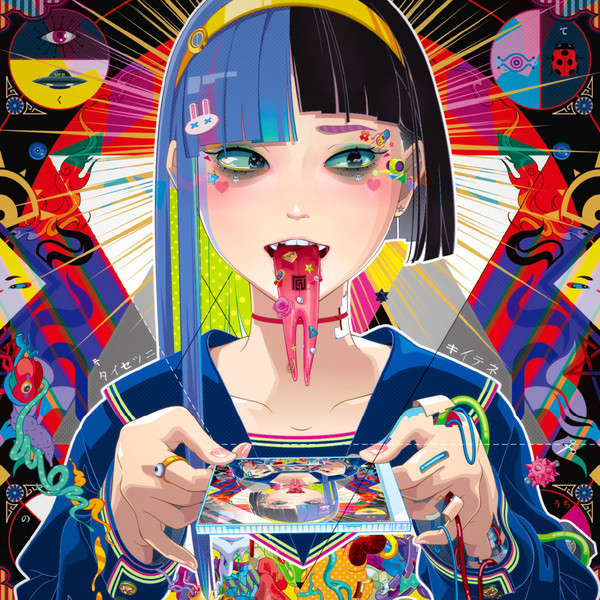
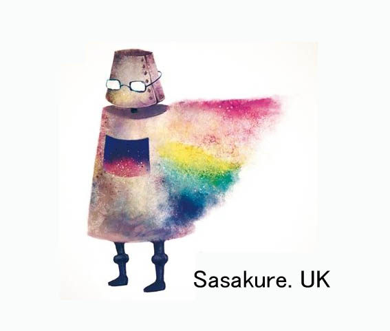

DJ TECHNORCH（本名：山下 泰、3月3日）は、日本のDJ、作曲家。

概要
作曲家としてはbeatmania IIDX等、コナミデジタルエンタテインメントの音楽ゲームに楽曲を提供していることが有名。L.E.D.とのトークセッションで、音楽を作り始めたきっかけはbeatmaniaに収録された「HELL SCAPER」に感銘を受けたことであると公言している。また、BMSを発表していたことでも知られる。
レイヴミュージックを好み、オールドスクール・ヒップホップやハードコアテクノのサブジャンルのひとつであるフリーフォーム、シュランツなどにガバの要素を複合した楽曲を多数発表している。
自身が発表する楽曲のジャンルとして『〜（基本のジャンル）meets GABBA』を名乗ることがある。過去にはトランスコアに傾倒していた。
ニコニコ動画用の名義として『123123（ウタカネヒフミ）』がある。
DJとしては、ボイスチェンジャーを使用してフロアのオーディエンスを煽るライブパフォーマンスが恒例になっている。
その他、初音ミクやJ-Coreなどの日本の同人音楽シーンを解説した著書『読む音楽』の出版をはじめとする執筆活動も行っている。
代表するBMS楽曲
GOTHIC SYSTEM(Original Mix)
axs
Wikipedia DJ TECHNORCHより
sasakure.UK（ササクレ・ユーケイ、ささくれP、2月11日）は日本の作曲家。

概要
「SF」と「寓話」を作品世界の根幹とし、チップチューン系のサウンドや、音楽のみならずドット絵のアニメーション、アートワークなどでも評価を得ている。ゲーム・ミュージック、男声合唱、日本文学などの影響を受けていると言い、作品に大きな影響を受けた作家として宮沢賢治、星新一、手塚治虫の名前を挙げている。
高校生のときに携帯電話の着メロを作るアプリで曲を作ったのをきっかけに作曲を始め、2007年の末より動画共有サイト・ニコニコ動画などでVOCALOIDを用いた楽曲の発表を始める。VOCALOIDを用いた作品では「VOCALOIDにしか表現できないような楽曲やアプローチ」を追及しているという。2009年のVOCALOIDシーンにおいて大きな活躍を見せ、2010年3月3日にはJoint Recordsよりアルバム『ボーカロイドは終末鳥の夢を見るか？』を発売した。2010年3月25日に発売された
PlayStation Portable用リズムアクションゲーム『初音ミク -Project DIVA-』用の追加ダウンロードコンテンツ『ミクうた、おかわり』ではsasakure.UKの「*ハロー、プラネット。」のPVを元にしたミニゲームが配信された。2011年12月には、自らの音楽表現を拡張するため、ロックバンド「有形ランペイジ」を結成し、翌2012年10月にアルバム『有形世界リコンストラクション』をリリースした。「有形ランペイジ」では、生身の人間には適さないVOCALOID楽曲の生演奏での表現に取り組んでいる。
2012年4月にVOCALOIDと土岐麻子など5人の女性歌手をボーカルに迎えた2ndアルバム『幻実アイソーポス』を発売。「人と機械の共存」をテーマにした作品だと語る。
翌年の2013年5月に3rdアルバム『トンデモ未来空奏図』を発売。初回限定盤はA5サイズのハードカバーでアニメーション作家植草航による描き下ろしマンガが同梱されており、彼が妄想するSF的世界観が表現されている。
その後自身が考案したストーリーをもとに、 作中の登場人物や出来事をモチーフとした楽曲の数々を音で綴るプロジェクトをスタート。2014年12月にはVOCALOIDや重音テト、肉声を織り交ぜ多彩なボーカルを起用したミニアルバム『摩訶摩謌モノモノシー』を発表。とある街の中学校が舞台で、そこに通う少年少女と異形の存在「妖禍子」が繰り広げる様々な出来事を音楽を通して語っている。
翌年2015年12月にその続編となる4thアルバム『不謌思戯モノユカシー』を発売。ジャケットのイラストを担当したイラストレーター/アニメーション作家の植草航は、「sasakure.UKさんの作品は、ボーカロイドじゃないとできない表現だと思ったし、新しいものを聴いた衝撃があった。」とコメントしている。
動画の総再生回数は『不謌思戯モノユカシー』発売時にニコニコ動画にて2,300万回を超えた。また、楽曲のコンセプトや世界観をもとに自らイラストや映像の制作も手掛け、そのマルチな才能も非常に評価が高く、近年では様々なジャンルのクリエイターとのコラボレーションも企画・監修している。
代表するBMS楽曲
海神寓拝
Pangaea
AVALON
Jack-the-Ripper◆
Wikipedia sasakure.UKより